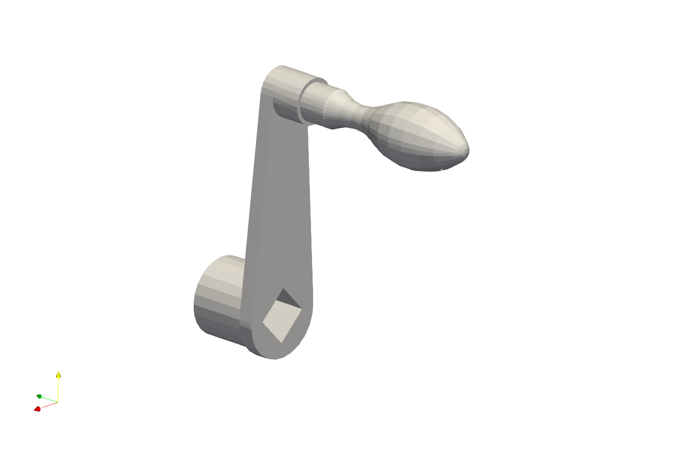
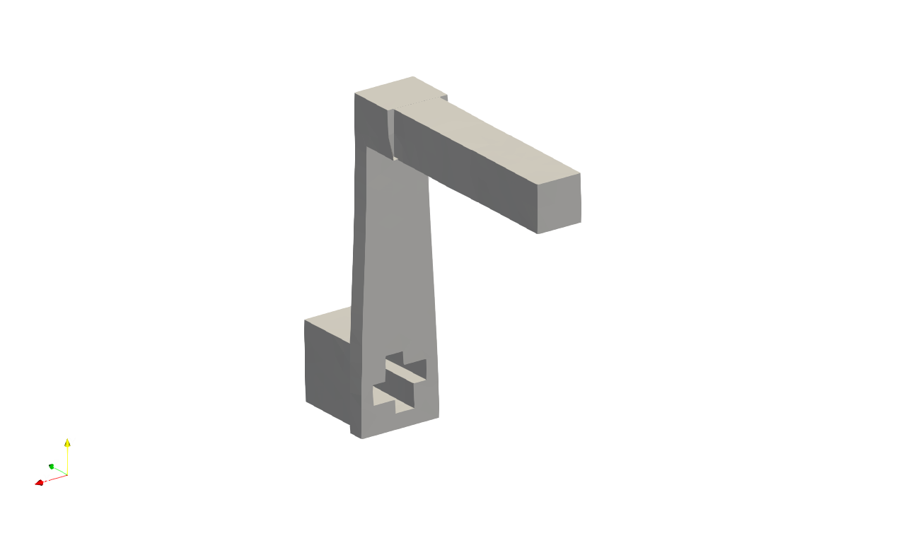
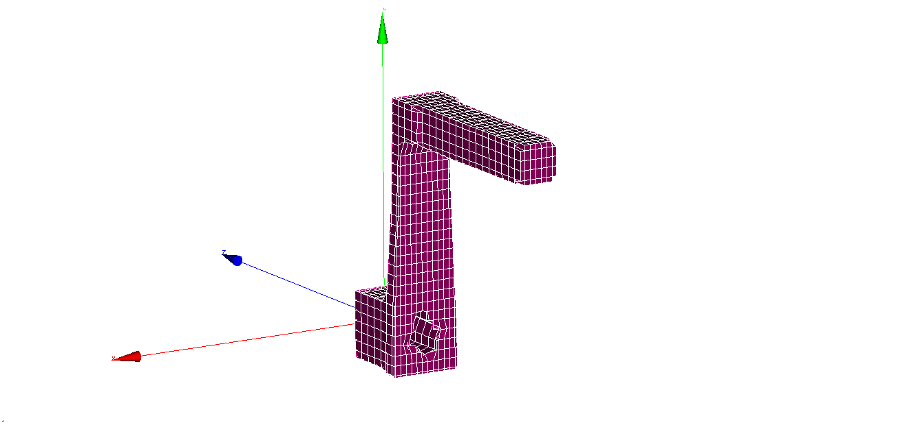
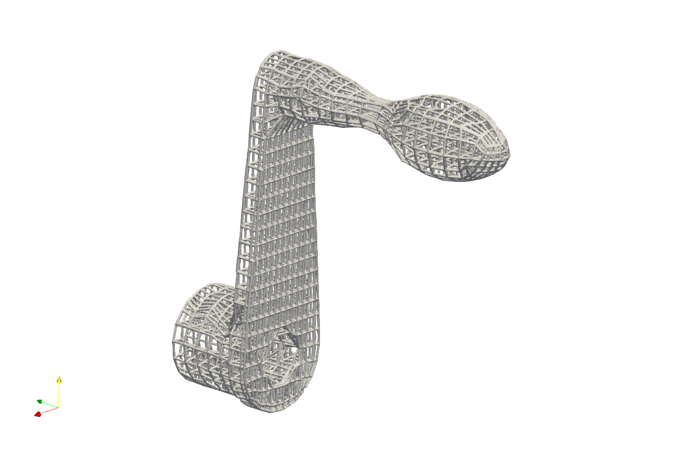
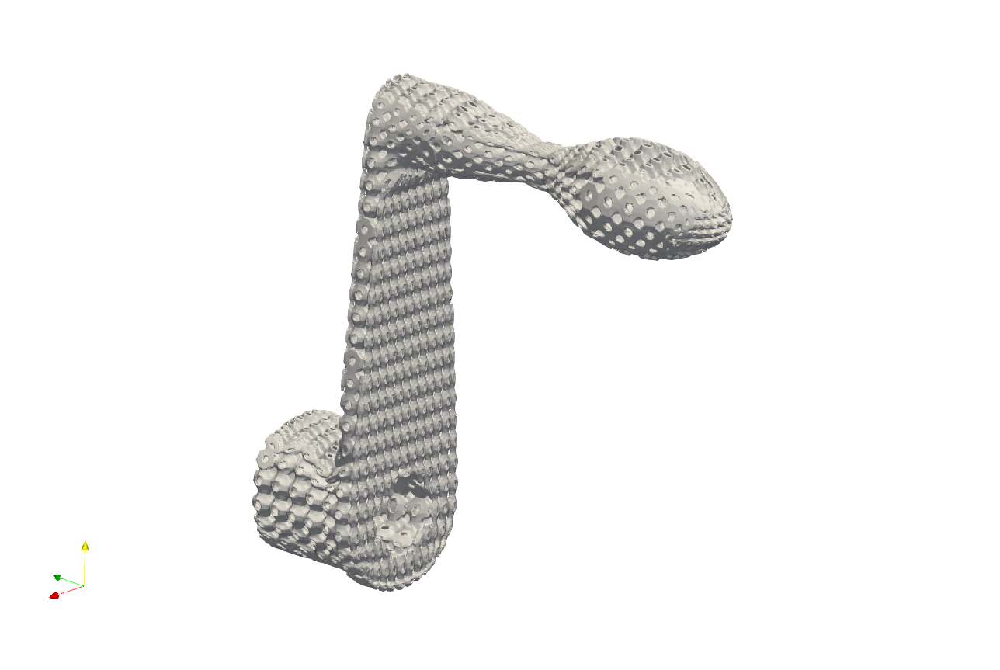
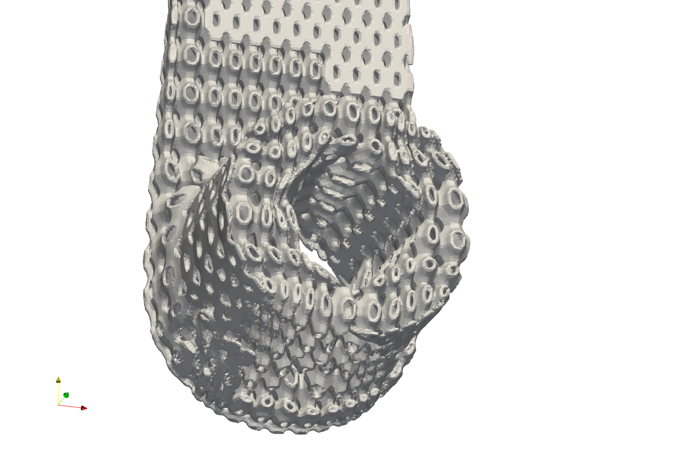

Conformal Lattice 02#
Artisan incorporates a set of keywords designed to facilitate the generation of hexahedral element-based meshes for creating conformal lattices. This process follows a structured pipeline of keywords that handle mesh transformation, deformation, and mapping. The core principle is straightforward: transform the original shape into a near-polycube form, generate the hexahedral mesh in this intermediate state, and then map the mesh back to the original shape. User may find the example work flow (including three JSON files) at the folder .//Test_json//ConformalLattice//HexConformal//.
For the theoretical background of the polycube based hex meshing algorithm, user may refer to the following published papers:
Xianzhong Fang, Weiwei Xu, Hujun Bao, and Jin Huang. 2016. All-hex meshing using closed-form induced polycube. ACM Trans. Graph. 35, 4, Article 124 (July 2016), 9 pages. https://doi.org/10.1145/2897824.2925957
Lingxiao Li, Paul Zhang, Dmitriy Smirnov, S. Mazdak Abulnaga, and Justin Solomon. 2021. Interactive all-hex meshing via cuboid decomposition. ACM Trans. Graph. 40, 6, Article 256 (December 2021), 17 pages. https://doi.org/10.1145/3478513.3480568
Gregson, J., Sheffer, A. and Zhang, E. (2011), All-Hex Mesh Generation via Volumetric PolyCube Deformation. Computer Graphics Forum, 30: 1407-1416. https://doi.org/10.1111/j.1467-8659.2011.02015.x
Note
Like any other algorithm, the algorithm/keyword pipeline presented here has its limitations. While it is designed to effectively transform and map meshes for specific use cases, it may not perform optimally for all types of geometries or scenarios. The current implementation is particularly suited for the geometries with smaller lattice unit infill and fewer intricate features, where a higher degree of mesh freedom is necessary to achieve accurate approximations. Users are encouraged to assess its applicability to their specific needs and consider integrating it with other tools or techniques to achieve the best possible results.
Warning
This feature requires users to carefully check up the output of every single step, and make sure the results satisfy the requirements.
New Options for the Polycube Workflow#
The updated workflow can generate an adaptive tetrahedral background mesh, deform it into a polycube, and improve the fitted hexahedral mesh before mapping it back to the original shape. The main keywords are summarized below.
Keyword |
Purpose and main controls |
|---|---|
|
Optional first step for generating the background Tet mesh. |
|
Deforms the Tet mesh with faster energy and derivative calculations. New optional controls are |
|
Generates Hex elements directly from the deformed Tet mesh. It uses a basic Cartesian grid, fits the boundary, and improves cell shape and spacing. |
Use Gen_PolyCubeHexMesh in place of the basic Cartesian meshing step
when boundary fitting and quality improvement are wanted. For example, insert
the following operation into the WorkFlow section:
{
"Gen_PolyCubeHexMesh": {
"inp_meshfile": ".//Test_results//crank_handle_polycube.inp",
"out_meshfile": ".//Test_results//crank_handle_polycube_mesh.med",
"cell_size": [2.0, 2.0, 2.0],
"quality_iterations": 40,
"preserve_features": true,
"min_scaled_jacobian": 0.1,
"quality_report": ".//Test_results//crank_handle_polycube_hex_quality.json"
}
}
Continue with Proc_Mesh_MappingHexElem and the conformal lattice
generation steps described below. Keep the original and deformed Tet meshes
with identical vertex numbering and element connectivity for this mapping.
The two quality limits have different meanings: minimum_jacobian
limits each Tet’s signed volume relative to its original volume, while
min_scaled_jacobian controls Hex shape quality. Inspect the quality
reports before mapping; a valid polycube mesh may still be an unconverged
partial result, and the mapped Hex mesh needs a separate quality check.
A complete combined example is provided in
.//Test_json//ConformalLattice//HexConformal//HexConformal_AdaptiveTet_CartesianFit_AllSteps.json.
The detailed parameter descriptions and the original Cartesian workflow remain
in the following sections.
PolyCube Generation#
This is the first step in the process. Polycube generation transforms the given tetrahedral mesh into a near-polycube shape. At a later stage, users can utilize other meshing tools available in Artisan, such as Cartesian meshers, to create a more fitted mesh for this transformed shape. Here uses the crank handle model as example to create the polycube shape. The example file is HexConformal_Step01_Polycube.json.
{"Setup":{ "Type" : "Geometry",
"Geomfile": ".//sample-obj//crank_handle.stl",
"Rot" : [0.0,0.0,0.0],
"res":[1.0,1.0,1.0],
"Padding": 5,
"onGPU": false,
"memorylimit": 16106127360
},
"WorkFlow":{
"1": {"Proc_Mesh_PolyCube":{
"inp_meshfile": ".//sample-obj//crank_handle.inp",
"out_meshfile": ".//Test_results//crank_handle_polycube.inp",
"cube": 500.0,
"smoothness": 10.0,
"distortion_angle": 10.0,
"distortion_volume": 10.0,
"max_iteration": 200,
"minimum_jacobian": 0.001,
"continuation_steps": 3,
"ftol": 1e-8,
"gtol": 1e-6,
"quality_report": ".//Test_results//crank_handle_polycube_quality.json"
}
},
"2": {
"Proc_Mesh_ExtractSurf": {
"inp_meshfile": ".//Test_results//crank_handle_polycube.inp",
"out_meshfile": ".//Test_results//crank_handle_polycube_exterior.stl",
"isSplitTris": false,
"Elem_Type": "Tet"
}
}
},
"PostProcess":{"CombineMeshes": true,
"RemovePartitionMeshFile": false,
"RemoveIsolatedParts": false,
"ExportLazPts": false}
}
The JSON configuration above generates a polycube shape and extracts its exterior
triangular mesh. Proc_Mesh_PolyCube combines cubeness, distortion and surface
smoothness in a feasible L-BFGS optimizer. The C++ implementation caches reference
geometry and computes finite-difference derivatives from only the affected faces
and tetrahedra. Coordinates are normalized internally and restored before export.
Parameter |
Details |
|---|---|
|
input tetrahedral mesh file path and file name. |
|
file path and name for the resulting polycube shape mesh. |
|
a float number controlling the weight of cubeness in the deformation. |
|
Nonnegative surface-smoothness weight. The example uses 10; tune relative to the other weights. |
|
Nonnegative shape-distortion weight. The example uses 10. |
|
Nonnegative volume-distortion weight. The example uses 10. |
|
Total iteration budget across continuation stages; stages do not multiply this budget. |
|
Optional minimum signed volume ratio to each original tetrahedron, strictly between 0 and 1; default 0.001. This is not a scaled Jacobian or an absolute mesh volume. |
|
Optional positive integer; default 3. Cubeness increases geometrically from 1% to 100% of the requested weight. Use 1 to apply the target weight immediately. The stage count is capped by the iteration budget. |
|
Optional relative energy-reduction tolerance; default 1e-8. The objective is divided by max(1, all target weights) before applying this tolerance. A heavily restricted feasible step cannot by itself trigger this stopping rule. Set 0 to disable the small-positive-reduction criterion. |
|
Optional gradient infinity-norm tolerance; default 1e-6. Applies to normalized coordinates and the scaled objective. |
|
Optional JSON report path; default empty (no report file). Its parent directory must exist. |
Every accepted step is checked along its entire path using a cubic Bernstein bound on each tetrahedron’s relative determinant. When thin tetrahedra restrict a step, a local direction adjustment allows other regions to keep moving. The same determinant check also applies to adjusted directions. The original reference mesh and its vertex connectivity remain fixed throughout all stages.
Invalid input (degenerate elements, non-manifold faces, or folded adjacent tets) is rejected before export. These checks and the determinant floor prevent local inversions; they do not certify the absence of collisions between distant mesh regions. The keyword does not repair an already folded input mesh.
On an iteration limit or stalled search, the keyword returns a valid partial
deformation and logs a warning. Inspect its alignment before generating hexes.
The report distinguishes converged from valid, and contains stage
energies, stopping reasons, minimum volume ratio, volume-ratio percentiles
(0, 5, 50, 95, 100), the worst tetrahedron indices (zero-based), cubeness and mean
axis-deviation angle, accepted-step history, backtracks and elapsed time.
Convergence is a numerical stopping condition, not a guarantee of a perfect
polycube. Extremely large cubeness weights can force the solution against the
determinant floor; start with the balanced weights shown above.
Existing JSON files remain accepted. To use the Python safeguards from a packaged
ArtisanMain.exe, rebuild that executable after updating the source; replacing
Snippetslib.pyd alone updates only the native calculations.
Below shows comparison between the original crank handle model, and the generated polycube shape of the given mesh. The exterior triangle mesh will be then used for creating Cartesian mesh.


Polycube Hex Meshing: CartesianFit#
The keyword Gen_PolyCubeHexMesh generates Hex elements from a valid
deformed polycube Tet mesh. Version 2 uses the same grid generator and
cell-selection code as Gen_BasicCartesianHexMesh, with its direct
projection disabled. It then fits the boundary and explicitly improves cell
shape and spacing. The legacy keyword itself is unchanged.
Bounds and the exterior surface come from the input Tet mesh. An intermediate
STL is optional. The combined example is
.//Test_json//ConformalLattice//HexConformal//HexConformal_AdaptiveTet_CartesianFit_AllSteps.json.
Relative paths are resolved from Src. The example is schema-validated;
its complete crank-handle pipeline has not been executed in these regressions.
The original and deformed Tet meshes used in the later mapping step must have
matching connectivity. Folded background tetrahedra must be repaired upstream.
"Gen_PolyCubeHexMesh": {
"inp_meshfile": ".//Test_results//crank_handle_polycube.inp",
"out_meshfile": ".//Test_results//crank_handle_polycube_mesh.med",
"cell_size": [2.0, 2.0, 2.0],
"numCoverNodes": -1,
"max_iteration": 100,
"quality_iterations": 40,
"preserve_features": true,
"feature_angle": 45.0,
"size_weight": 0.1,
"min_scaled_jacobian": 0.1,
"surface_tolerance": 0.5,
"quality_report": ".//Test_results//crank_handle_polycube_hex_quality.json"
}
Parameter |
Meaning |
|---|---|
|
Required Tet input and Hex output, as paths or mesh-container IDs. Hex files need a volume format such as INP, MED, VTK or VTU. |
|
Required positive scalar or three positive sizes in geometry units. Grid counts are rounded up and spacing adjusted down to the automatic bounds. Anisotropic requested sizes are respected by the optimization target. |
|
|
|
Integer from -1 to 8, using the legacy cell-selection rule. Default -1 selects by cell centre and preserves the earlier keyword’s selection convention. Values 0..8 select cells with at least that many corners inside/on the geometry; 0 retains the bounding grid. Use 2 to match that setting in legacy workflows. Selection choices can change topology or make fitting impossible. |
|
Maximum boundary-fitting iterations; default 100. Fitting also distributes boundary displacement through interior nodes. |
|
Maximum additional shape/spacing optimization iterations after a successful fit; default 40. Set 0 for fitting only. Optimization may stop early when no admissible improving move is found. |
|
Default true. Associates boundary nodes with surface patches, feature curves and corners. Associations are local heuristics; the report identifies unmatched input corners. False uses unrestricted closest-surface fitting without feature associations. |
|
Sharp-edge normal-angle threshold in degrees; default 45, strictly between 0 and 180. Smaller angles detect more features, including possible triangulation noise. |
|
Nonnegative weight on squared log-volume error relative to the initial Cartesian cell volume; default 0.1. Shape improvement remains active when this is 0. |
|
Positive weight, default 0.05. Penalizes changes to seed edge vectors during fitting and differences in neighbouring log-volumes during quality improvement. |
|
Quality floor at 27 sample points per cell; default 0.1, strictly between 0 and 1. The quality stage also retains the fitted mesh’s minimum, allowing only 1e-9 numerical slack. |
|
Maximum sampled surface distance in both directions, in geometry units. Default is one quarter of the smallest requested cell size. Samples include vertices, edge midpoints and face centres; this is not a Hausdorff bound. |
|
Maximum cells in the entire bounding grid before selection; default 250000. |
|
Optional JSON path; default empty. Its parent must exist. Diagnostics are also available as |
The seed is compacted to remove unused vertices. Boundary faces are found by face incidence, and closed-manifold checks and boundary component/Euler signatures guard against obvious topology changes. The selected connectivity stays fixed throughout fitting and optimization.
Fitting uses bidirectional closest-point distances and a sparse deformation solve. Target triangles are grouped into patches across non-sharp edges. Patch incidence on the seed boundary distinguishes true geometric features from Cartesian staircase edges. Feature curves are divided at geometric corners.
Exact projection of every staircase boundary face onto a plane can collapse hexes when connectivity is fixed. Quality-stage projection therefore allows patch nodes within half the surface tolerance of their assigned patch and curve nodes within one quarter of that tolerance of their assigned curve. Matched corners have exact target positions in proposed moves. During guarded fitting, partial moves may leave corner residuals; acceptance allows these within the same quarter-tolerance feature band. The report gives actual feature and corner residuals. This is tolerance-controlled feature fitting, not a claim of exact feature preservation. Every accepted final mesh must still satisfy the bidirectional surface tolerance. Unmatched features can require a finer grid.
The second stage runs even when no boundary fitting was needed. Its objective combines mean-ratio shape distortion, squared log-volume error, a smooth worst-cell emphasis and neighbouring volume grading. Jacobians are measured relative to the initial grid spacing, so intentional anisotropy is not treated as an error. Analytic derivatives drive projected, preconditioned descent. Every accepted quality move lowers this objective while preserving the fit tolerance and the fitted minimum scaled Jacobian. This does not guarantee that every individual quality statistic improves or that the global optimum is found.
Both stages shorten or reject moves that violate the quality floor or a conservative whole-cell determinant check. This check requires all 27 Bernstein coefficients of the triquadratic determinant to be positive with a numerical margin. It can reject a valid cell; checking corner determinants alone would be insufficient. Geometry and optimization use normalized float64 coordinates. Open3D chooses candidate triangles in float32; closest points on those triangles are recomputed in float64. Reverse surface queries triangulate boundary quads, which approximates warped bilinear faces.
Reports include initial, fitted and final quality, surface errors, feature associations and residuals, fitting/optimization stop reasons, objective change, and iteration/backtracking counts. Aspect ratio uses the ratio of largest to smallest Jacobian singular values, sampled at 27 points. Cell volumes use exact tensor Simpson integration of the determinant; their coefficient of variation measures size distribution. Aspect ratio complements scaled Jacobian: an elongated orthogonal box still has scaled Jacobian one.
If fitting fails, the operation writes its failure report when requested and raises an error without replacing the output mesh. Invalid inputs or invalid initial topology raise errors before fitting. If fitting succeeds but further quality improvement is blocked, it returns the last acceptable fitted mesh and records why optimization stopped.
Note
This implementation does not add padding, change connectivity, perform
cuboid decomposition, or optimize the later mapping to the original shape.
It does not certify global non-overlap or resolve features below the grid
spacing. Local validity of the polycube Hex mesh does not guarantee validity
after mapping. Inspect that mesh separately. Reducing cell size can help;
fixed-connectivity fitting is not guaranteed to succeed at every resolution.
CuboidLayout is not available.
Surface fitting and distortion objectives are informed by Li et al. (2021), Interactive All-Hex Meshing via Cuboid Decomposition, sections 4.3-4.4, https://arxiv.org/abs/2109.06279. This is an independent Cartesian implementation, not a reproduction of the complete paper’s algorithm. The whole-cell determinant test follows the Bernstein-bound principle in Johnen, Weill and Remacle (2017), Robust and efficient validation of the linear hexahedral element, https://doi.org/10.1016/j.proeng.2017.09.809.
Cartesian Meshing#
The example file HexConformal_Step02_CartesianMesh.json demonstrates the use of an existing Artisan keyword to generate a Cartesian mesh. Users can opt for other Cartesian mesher in Artisan to better suit their specific requirements, such as achieving locally varying mesh sizes or different element densities.
{
"Setup": {
"Type": "Geometry",
"Geomfile": ".//sample-obj//crank_handle.stl",
"Rot": [0.0, 0.0, 0.0],
"res": [1.0, 1.0, 1.0],
"Padding": 5,
"onGPU": false,
"memorylimit": 16106127360
},
"WorkFlow": {
"1": {
"Gen_BasicCartesianHexMesh": {
"num_elem": [15, 30, 25],
"x_range": [0.0, 24.0],
"y_range": [0.0, 78.0],
"z_range": [0.0, 80.0],
"ori": [-12.0, -12.0, -80.0],
"Normal": [0.0, 0.0, 1.0],
"z_angle": 0.0,
"Meshfile": ".//Test_results//crank_handle_polycube_mesh.med",
"Geomfile": ".//Test_results//crank_handle_polycube_exterior.stl",
"numPrjLayers": 1,
"LayerDepth": 2.0,
"numCoverNodes": 2
}
}
},
"PostProcess": {
"CombineMeshes": true,
"RemovePartitionMeshFile": false,
"RemoveIsolatedParts": false,
"ExportLazPts": false
}
}

Pull back Transformation#
The last stage is transforming the Cartesian mesh to the original shape of the crank handle model. The example file HexConformal_Step03_Mapping.json shows the usage of keyword Proc_Mesh_MappingHexElem to pull back the Cartesian mesh to map on the original shape of crank handle, and use the new mesh to perform the conformal lattice infill.
{
"Setup": {
"Type": "Geometry",
"Geomfile": ".//sample-obj//crank_handle.stl",
"Rot": [0.0, 0.0, 0.0],
"res": [0.2, 0.2, 0.2],
"Padding": 5,
"onGPU": false,
"memorylimit": 16106127360
},
"WorkFlow": {
"1": {
"Proc_Mesh_MappingHexElem": {
"inp_original_meshfile": ".//Test_results//crank_handle_polycube.inp",
"inp_deformed_meshfile": ".//sample-obj//crank_handle.inp",
"inp_Hex_meshfile": ".//Test_results//crank_handle_polycube_mesh.med",
"out_meshfile": ".//Test_results//crank_handle_hex_mesh.med"
}
},
"2": {"Add_Lattice":{
"la_name": ".//Test_json//ConformalLattice//HexConformal//crank_handle_conformal.mld",
"size": [1.0, 1.0, 1.0], "thk":0.15,
"Rot": [0.0, 0.0, 0.0], "Trans":[0.0, 0.0, 0.0],
"Inv": false, "Fill": false,
"Cube_Request": {}
}},
"3": {"Export": {"outfile": ".//Test_results//crank_handle_conformal_HexInfill.stl"}}
},
"PostProcess": {
"CombineMeshes": true,
"RemovePartitionMeshFile": false,
"RemoveIsolatedParts": false,
"ExportLazPts": false
}
}
The table below explains the parameter details.
Parameter |
Details |
|---|---|
|
the reference tetrahedral mesh file path and file name. In this case, it is the transformed tetrahedral mesh of the polycube shape. |
|
The target tetrahedral mesh file path and file name. In this case, it is the original tetrahedral mesh before transforming to the polycube shape. |
|
The hexahedral mesh to be transformed. In this case, the Cartesian mesh of the polycube shape. |
|
The resulting hexahedral mesh that transformed from reference state to the target state. |
Below shows the conformal lattice infill using cubic lattice and :code:`` lattice.


As mentioned, the algorithm may produce some imperfections of the element layout, as below demonstrated. User may requires careful check up on the mesh, and adjust the parameters to regenerate the mesh for meeting the requirements.

Recommendation#
User may think about following tips when applying above procedure for generating complete conformal mesh.
Laying the geometry’s major axis along with the global coordinate system axes can improve the cubeness of the polycube.
Increasing the number of element in the input tetrahedral mesh can make a better shape of polycube.
Smaller lattice size, or more number of the Cartesian mesh elements can give a better polycube shape, and after transformation fitting.